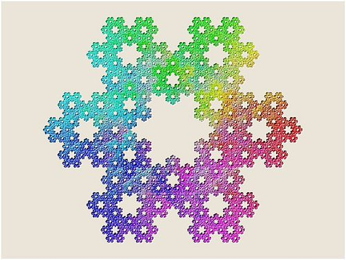

This will be a living document, that I will update as my journey through creation, and understanding of it change
Enlightenment or awakening is not the creation of a new state of affairs but the recognition of what already is…
Alan Watts
Table of contents
Introduction
For centuries, man has pondered and debated the world that we live in. Science will tell you it is all the consequence of random and chaotic events that formed it all. Religions, on the other side will tell you that it was all created from a benevolent God. In truth, it appears that both sides have parts of the creation story correct.
It is nearly impossible to look out at the night sky, or watch the incredible patterns that emerge in creation and not see the great intelligence and harmony that exist in nature. From the way plants work in balance with the microbes in the soil, or watching the predator and prey populations rise and fall in perfect balance.
For those of the atheist/materialist distortion, these are all simply happening by chance. I will not spend too much time reviewing the materialistic view of creation. This view is widely known and taught in schools from the time we are young, so it doesn’t warrant a deep dive. In future articles we will explore materialism, and try to unpack and understand it better. Future link to article
The rest of this overview will be written from the lens of creation originating from an intelligent design/er. We will explore many topics, and attempt to better understand where it all arose from, and better yet…..why!
So buckle up as we explore this age old mystery, and try to find answers to the timeless questions…
Where did we come from?
Why are we here?
In the beginning
God is both manifest as the Totality and Allness of Creation and simultaneously unmanifest as the Godhead, the Infinite Potentiality and source or ‘void-ness’ prior to form.
Dr. David Hawkins
Throughout recorded history mankind has sought to answer the question of the beginning. Even though it appears our mind is incapable of truly grasping concepts around infinity, and something having “always been”, it does appear that there is value in the contemplation of how it all started. We will take a look at some of the theories and concepts we have come up with over the centuries, as well as explore what sources like the Law of One state.
The Big Bang
One of the leading theories in the scientific community is known as The Big Bang Theory by Georges LeMaitre in 1927, summarized nicely here:
The Big Bang Theory is the leading explanation for how the universe began. Simply put, it says the universe as we know it started with an infinitely hot and dense single point that inflated and stretched — first at unimaginable speeds, and then at a more measurable rate — over the next 13.7 billion years to the still-expanding cosmos that we know today.
LeMaitre theorized that if Einstein’s laws of gravitation were true, that the universe must be expanding. In 1929, when Edwin Hubble discovered that galaxies were indeed moving away from us at rapid speeds, this provided LaMatire evidence of his theory. He postulated that if the galaxies are rushing away from us, that if you simply reverse their course, they would end up in a single point in time/space.
Others took notice and named his theory “big bang.” LeMaitre’s ideas opened more questions, many of which forced physics and astronomy together: What was that primordial atom like? Why would it explode? He pursued the topic for some time, even suggesting that there ought to be some form of background radiation in the universe, left over from the initial explosion of that primordial atom. He became more interested in the philosophical ramifications of his theory, which were many.
Others took up the big bang theory, and for several years there were strong debates between those supporting it and those who favored a “steady state” theory of the universe, in which the universe was eternal and unchanging. This argument ended when Arno Penzias and Robert Wilson found evidence of cosmic background radiation, which LeMaitre and other theorists had determined would be the residue of the big bang’s explosion many billions of years ago. Source
By utilizing telescopes, and eventually tools to measure background radiation, science was able to draw the conclusion that all matter in the universe existed as a singular, highly dense “atom”. Although many in the religious community ridicule the theory, it has a lot of merit, and actually doesn’t discount some of the religious creation stories or more modern theories at all. It appears that in fact, the Big Bang was the moment when our creator, or intelligent infinity as referred to in the Law of One, began the expansion into what we now see as our creation.
Creation in Religion
Mine hand also hath laid the foundation of the earth, and my right hand hath spanned the heavens: when I call unto them, they stand up together. Isaiah 48:13
I have made the earth, and created man upon it: I, even my hands, have stretched out the heavens, and all their host have I commanded. Isaiah 45:12
It is he that sitteth upon the circle of the earth, and the inhabitants thereof are as grasshoppers; that stretcheth out the heavens as a curtain, and spreadeth them out as a tent to dwell in. Isaiah 40:22
We can see from the book of Isaiah from Bible’s old testament, that God has “spanned” the heavens, or stretched them out. In chapter 40, verse 22, it is further described as being stretched out like a curtain, and spread as a tent for us to dwell in. It is not a far strecth to gather that in God’s creation, the universe is spreading or expanding, which is something we have been able to also gather through observation.
This is similar to how the God Vishnu in the Hindu Bhagavad Gita (apologize if this is a gross oversimplification of the story) who creates the universe/s on his out breath.
Do the disbelievers not realize that the heavens and earth were ˹once˺ one mass then We split them apart? And We created from water every living thing. Will they not then believe? Qu’ran 21:30
In the Islam holy book of the Qu’Ran we also see reference to an explosion, or expansion of a singular point. In the above reference of the Qu’ran, once could even say it almost mirrors the The Big Bang.
It appears these creation “myths” actually have a lot of basis in science, but still doesn’t not fully tie all the pieces of creation together. We have at least began to attempt to scratch the surface Where did we come from?…but we still have not began to address Why are we here question.
Next, lets take a look at another, more “Modern” creation story, and see if that can help us continue to connect some dots..
Holographic Universe
“Imagine that everything you see, feel and hear in three dimensions (and your perception of time) in fact emanates from a flat two-dimensional field. The idea is similar to that of ordinary holograms where a three-dimensional image is encoded in a two-dimensional surface, such as in the hologram on a credit card. However, this time, the entire universe is encoded!”
Professor Kostas Skenderis
Scientists have recently began to theorize that the nature of creation/physical reality might be more holographic in nature. That the physical world is merely a 3D rendering of a two dimensional “image”. Although this concept might be difficult to wrap ones mind around at first, when it is examined and contemplated deeply, one begins to see how this could indeed be the basis for how our physical reality is indeed shaped.
If we read the following verse from the bible through this lens, we can consider that maybe there is a deeper meaning, or understanding to be entertained.
[26] And God said, Let us make man in our image, after our likeness: and let them have dominion over the fish of the sea, and over the fowl of the air, and over the cattle, and over all the earth, and over every creeping thing that creepeth upon the earth. [27] So God created man in his own image, in the image of God created he him; male and female created he them.
Genisis 1:26-27
fractal:Noun
any of various extremely irregular curves or shapes for which any suitably chosen part is similar in shape to a given larger or smaller part when magnified or reduced to the same size
If we examine the occorunce in nature of fractals and fractal geometry, we can observe this holographic principle in play. For example, if one is to study the geometric patterns that makeup a snowflake, and place it under a microscope, you will find that the snowflake is made up of tiny crystals that all share the overall appearance with the larger snowflake.

The structure of an atom also resembles that of a solar system, with neutrons and electrons maintaining a similar orbit to that of planets circling their stars.

Creation truly does seem to follow the as above…so below model, which lends the holographic theory some credibility.
In 1979, a complex set of fractals was defined as the Mandlebrot set, after its discoverer Benoît B. Mandelbrot.
Essentially, the Mandelbrot set is generated by iterating a simple function on the points of the complex plane. The points that produce a cycle (the same value over and over again) fall in the set, whereas the points that diverge (give ever-growing values) lie outside it. When plotted on a computer screen in many colors (different colors for different rates of divergence), the points outside the set can produce pictures of great beauty. The boundary of the Mandelbrot set is a fractal curve of infinite complexity, any portion of which can be blown up to reveal ever more outstanding detail, including miniature replicas of the whole set itself. Source
Below is a still image and an animated zoom of the Mandlebrot set:


As you can see, the further and further we zoom into the image, the original pattern is continued. This zoom appears to be able to go on infinitely.
This apparent holographic nature of our universe is described in detail in Session 13:5-8 of the Law of One:
13.5 Questioner: Thank you. Can you tell me of the earliest, first known thing in the creation?
Ra: I am Ra. The first known thing in the creation is infinity. The infinity is creation.
13.6 Questioner: From this infinity then must have come what we experience as creation. What was the next step or the next evolvement?
Ra: I am Ra. Infinity became aware. This was the next step.
13.7 Questioner: After this, what happened?
Ra: Awareness led to the focus of infinity into infinite energy. You have called this by various vibrational sound complexes, the most common to your ears being “Logos” or “Love.” The Creator is the focusing of infinity as an aware or conscious principle called by us as closely as we can create understanding/learning in your language, intelligent infinity.
13.8 Questioner: Can you state the next step?
Ra: The next step is still at this space/time nexus in your illusion achieving its progression as you may see it in your illusion. The next step is an infinite reaction to the creative principle following the Law of One in one of its primal distortions, freedom of will. Thus many, many dimensions, infinite in number, are possible. The energy moves from the intelligent infinity due first to the outpouring of randomized creative force, this then creating patterns which in holographic style appear as the entire creation no matter which direction or energy is explored. These patterns of energy begin then to regularize their own local, shall we say, rhythms and fields of energy, thus creating dimensions and universes.
So in 13.8, Ra perfectly describes the Mandlebrot set as seen above. This outpouring of randomized creative force contains the pattern/s and/or designs for the entirety of creation.
It appears that somewhere deep in this holographic pattern of creation lies the image of man, or other forms of intelligent life. Lets dive into this aspect of creation shall we?
The Divine Spark
And the Lord God formed man of the dust of the ground, and breathed into his nostrils the breath of life; and man became a living soul.
Genisis 2:7
In the book of Genisis, we see reference to the breathing the breathe of life into man’s nostrils. This breathe appears to be both literal (air we breathe) and figurative (divine spark of life).
In the Law of One:Session 13, we see a question is asked about the individualization of the intelligent infinity:
13.12 Questioner: Could you tell me how intelligent infinity became, shall we say (I’m having difficulty with some of the language), how intelligent infinity became individualized from itself?
Ra: I am Ra. This is an appropriate question. The intelligent infinity discerned a concept. This concept was discerned due to freedom of will of awareness. This concept was finity. This was the first and primal paradox or distortion of the Law of One. Thus the one intelligent infinity invested itself in an exploration of many-ness. Due to the infinite possibilities of intelligent infinity there is no ending to many-ness. The exploration, thus, is free to continue infinitely in an eternal present.
In the Gnostic traditions, you can also see references to this divine spark
Human nature mirrors the duality found in the world: in part it was made by the false creator God and in part it consists of the light of the True God. Humankind contains a perishable physical and psychic component, as well as a spiritual component which is a fragment of the divine essence. This latter part is often symbolically referred to as the “divine spark”. The recognition of this dual nature of the world and of the human being has earned the Gnostic tradition the epithet of “dualist”. Source
It would appear that in this ever expanding creation, that life contains a small piece of the One…this piece is the infinite part of our nature, and is what carries us forward through multiple lifetimes. This has had many names through history, but is most commonly referred to as the soul.